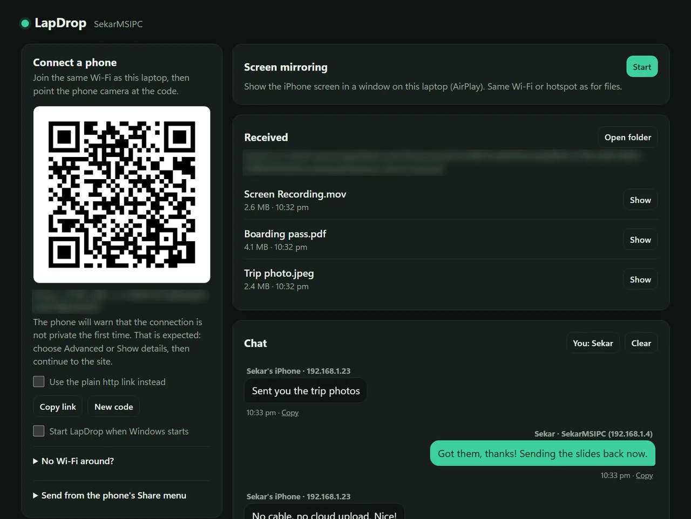
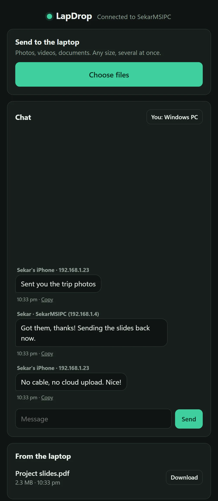
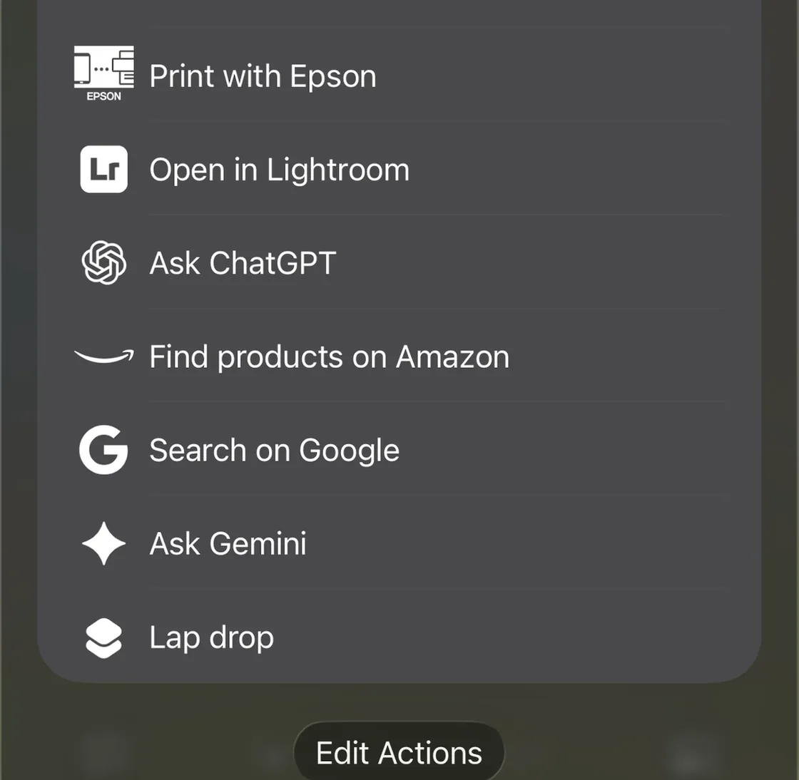
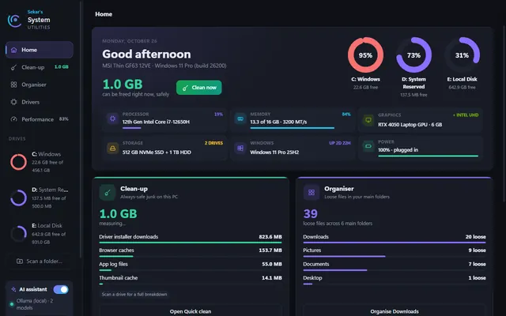

Project story
LapDrop: AirDrop for my Windows laptop
I only wanted to get photos from my iPhone onto my Windows laptop. There is no AirDrop on Windows, so I built my own: scan a QR code, send files of any size, and nothing leaves the local network.
- Version
- 1.0.0, released 20 November 2026
- Laptop
- Windows 10 and 11
- Phone
- Any browser: iPhone, iPad, Android, Mac, Linux, another PC
- Installer
- About 14 MB. No Python, no admin rights
- Licence
- MIT, open source
- Price
- Free, no account, no cloud
The requirement
It was a simple need. I had photos and screen recordings on my iPhone and I wanted them on my Windows laptop, the one I work on every day. Between Apple devices that is one tap: AirDrop. Between an iPhone and a Windows PC, it is not.
The usual ways all have a catch. A cable means finding the right one, unlocking the phone and waiting for Windows to see it. Emailing files to yourself runs into size limits and compression. Uploading to the cloud means sending everything out to the internet just to bring it back down to a laptop sitting next to the phone. And AirDrop itself only works from Apple to Apple.
Why I built it
The phone and the laptop were on the same Wi-Fi, a metre apart. Every phone already has a browser, and every browser can upload a file. So the laptop only needed to run a small web server and show the phone where to find it. No app on the phone, no account, and the files go straight across the local network. I built LapDrop with AI in a few sessions, testing each step with my own iPhone.
How it works
- Start LapDrop on the laptop. Its window shows a QR code.
- On the phone, join the same Wi-Fi and point the camera at the code.
- LapDrop opens in the phone's browser. Tap Choose files, pick as many as you like, and watch them arrive.

Files of any size are streamed straight to disk in Downloads\LapDrop, several at once, with a progress bar on the phone. It works the other way too: drop files on the laptop window, and the phone shows them with a Download button.

The problems along the way
“HTTPS only”. The first test failed straight away: my iPhone's browser refused a plain http link. LapDrop now makes its own certificate and the QR code opens an https link. The phone warns once that the connection is not private, which is expected for a certificate made at home; you continue, and the plain link is still there as a fallback.
“Network connection was lost”. After that warning, Safari sometimes went back to plain http on the secure port and gave up. The log showed exactly that, so LapDrop's secure port now answers both kinds of request.
No Wi-Fi. On the move there may be no shared network at all. LapDrop works over the phone's Personal Hotspot, or over the Windows Mobile hotspot, and the QR code follows the laptop's new address by itself. The transfer stays between the two devices and uses no mobile data.
Right in the iPhone Share menu
Opening a web page every time is fine, but sharing should be one tap. The phone page has step-by-step instructions to make an iPhone Shortcut once. After that, LapDrop sits in the Share menu of Photos, Files and every other app: Share → LapDrop, and the file is on the laptop.

Chat and screen mirroring
Once the phone and laptop could talk, a chat was a small step: a box on both pages for notes and links across the network. Every message shows the sender's name and the device's address, so with more than one phone connected you know who wrote what.
Screen mirroring is optional. LapDrop can start UxPlay, a separate open-source AirPlay receiver, so the iPhone's Screen Mirroring shows the phone in a window on the laptop. UxPlay is not included in the installer (it is GPL-licensed and large); the README explains how to add it.
Not just for iPhone
It started with an iPhone, but nothing in LapDrop is tied to one. Any device with a browser on the same network can use it: an Android phone, an iPad, a Mac, a Linux machine, or another Windows PC. That makes it a simple way to move files around a home or office LAN without a USB stick.
Safe by design
- Everything stays on your local network. There is no account, no cloud, no telemetry and no ads.
- Phones need the secret link from the QR code. New code stops old links working.
- The laptop's own controls only answer to a browser on the laptop itself, so another device or website cannot change settings.
- Anyone on the same network who has the link can send files, so use it on networks you trust.
What it cannot do
- It is not real AirDrop: the phone opens a page or the Share-menu shortcut instead of seeing the laptop in the AirDrop list.
- The phone and the laptop must be on the same network or hotspot. It does not work across the internet.
- The iPhone cannot use the laptop as a second screen; mirroring shows the phone's own screen.
